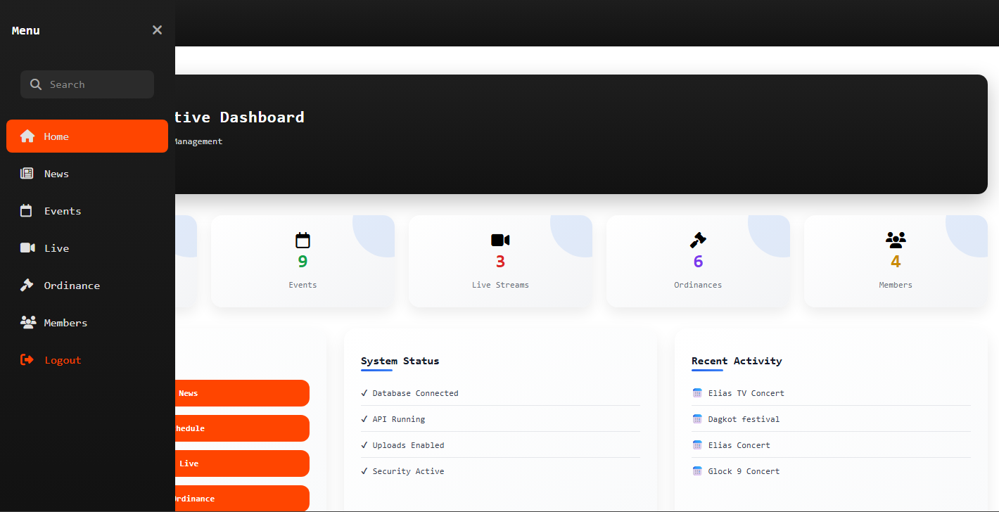
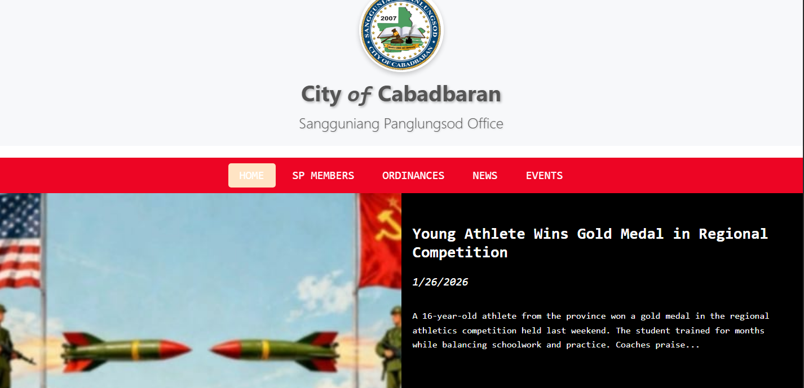
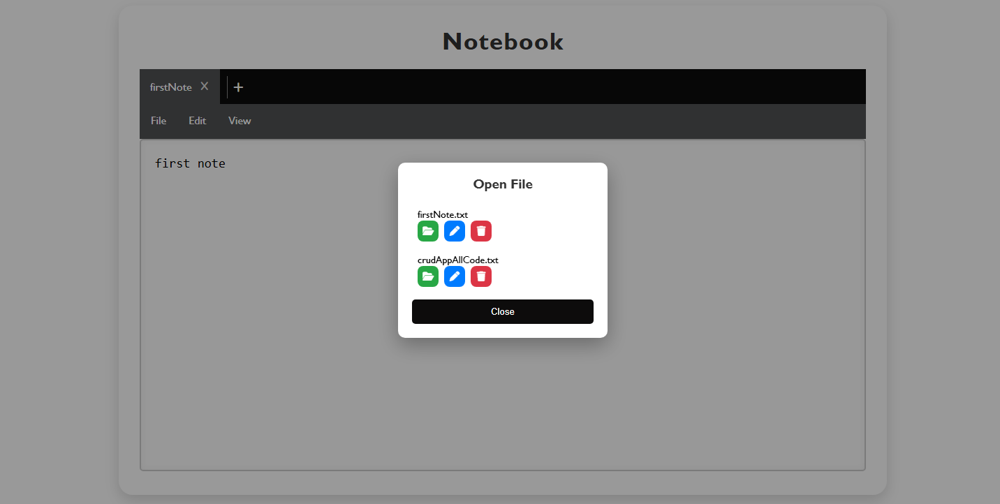
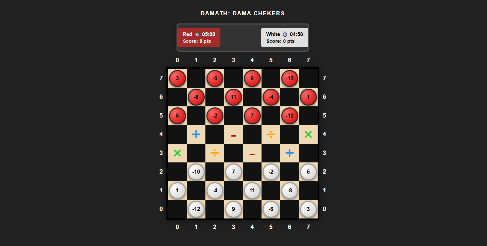
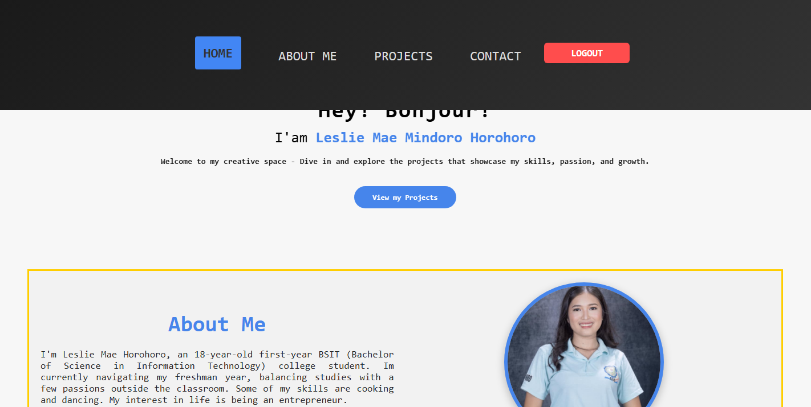
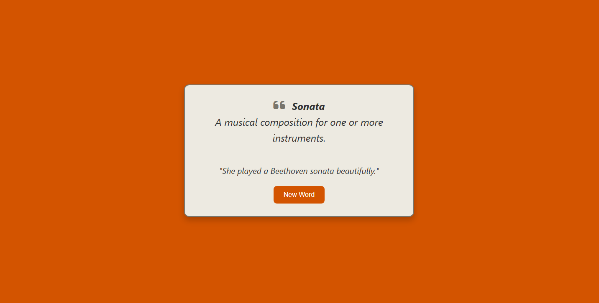

My Projects
My projects showcase my passion for building clean, functional, and user-focused applications. Each project reflects my dedication to writing efficient code and applying modern web development practices. I have worked on full-stack applications using technologies such as HTML, CSS, JavaScript, Node.js, and MongoDB. Through these projects, I continuously improve my problem-solving skills and understanding of real-world development workflows. Every project represents a step in my journey as a developer, where I focus on performance, usability, and scalability.
< CBR Dashboard System />
A personal developer portfolio showcasing my skills, projects, and experience using modern web technologies.
< CBR Public Website />
A CRUD-based application designed to manage data efficiently with a clean and user-friendly interface.
< CRUD Notebook app />
Notebook is a full-stack web-based note-taking application built with a modular frontend and backend architecture. It supports user authentication, tab-based note editing, and file management operations such as create, open, rename, and delete. Notes are persisted using a database-driven storage approach, ensuring data consistency and scalability.
< Damath Board Game />
DaMath is an educational board game that blends the Filipino game Dama (Checkers) with math operations. Players capture chips on math-based tiles to earn points, with Kings scoring double or quadruple. It features timers, sound effects, and rules — making math fun and strategic!
< Landing Page Design />
This project is a fully responsive personal portfolio designed to showcase background, skills, and projects in a clean and professional layout. It provides visitors a smooth browsing experience, from viewing introduction and projects to exploring the contact information and location.
< Random Word Machine />
Random Word Machine is a fun and interactive app that generates inspiring words with definitions and examples, while changing background colors to keep the experience fresh and engaging.